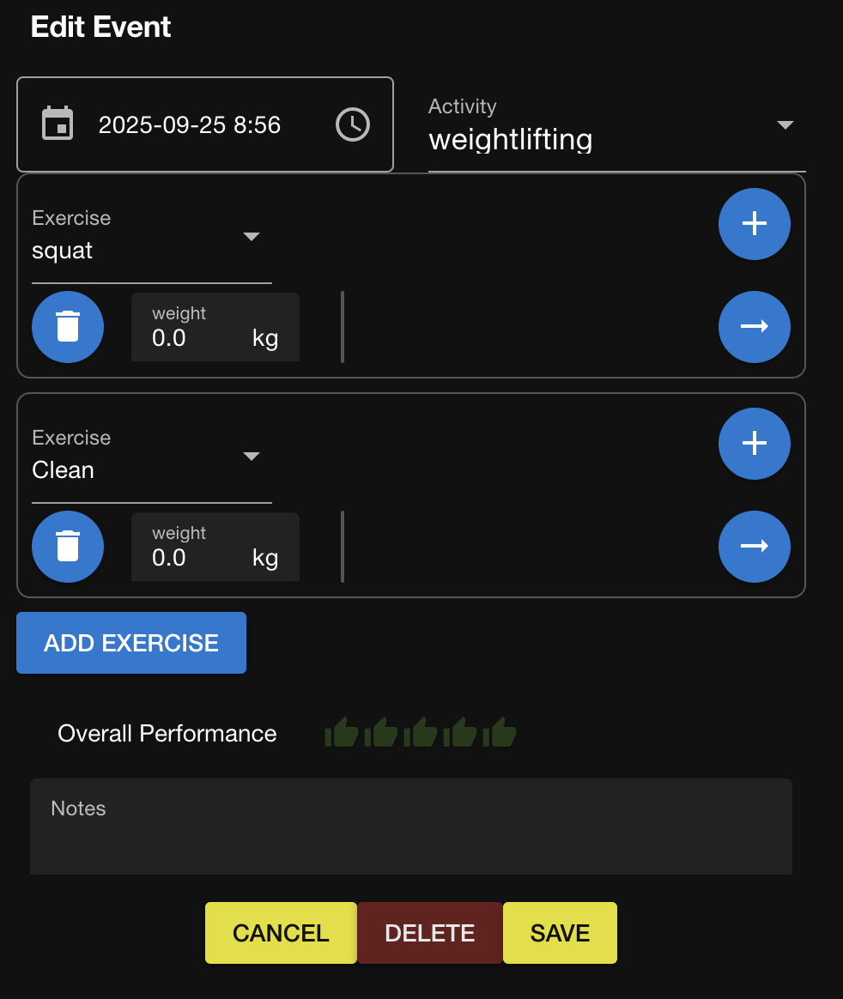
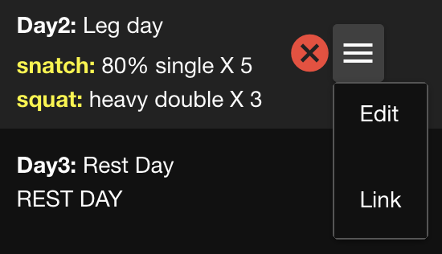

Execute a Training Program
When you are ready to start a training program you set the schedule for when to execute it. Doing so creates an instance of the program that is saved and managed separate from the program:
- You can make changes to the program instance without altering the program.
- You can make changes to the program without altering the instances that were generate from it.
Once you have started a program, a dashboard appears on the home page that provides details of the day's workout.
You can schedule multiple consecutive program instances, for example when you repeatedly perform a weekly routine. However, if program instances overlap only the one that starts first appears in the dashboard.
Execute a program
To start a program, you schedule the date of the first workout. The program dashboard automatically appears on the home page on the day of the first workout.
- On the menu bar, click Program.
- Select the activity that you are performing and then select the program to execute.
- Click Start.
- Enter a name for the program instance and set the starting date.
- Click the checkmark button to save the program instance.

See a list of program instances
All of the program instances that you have created are listed so that you can view or edit them as needed.
- Click Program on the menu bar.
- Select the activity and then click the Programs drop down.
Programs are left-justified and program instances are indented.
The program that is currently being executed is green and all future ones are white. - To include programs that occurred in the past, deselect Hide Completed.
Explore a program instance
Open a program instance to review the properties.
-
On the Program page, select the program instance that you want to view.
The calendar that appears shows a blue tag on each day that a workout occurs in the program instance.
Below the calendar is the name of the base program as well as the titles and descriptions of the block and microcycle that contain the selected day.
Below that is a list of workouts in the microcycle. -
Click a day on the calendar that has a workout on it.
In the list of workouts, the one corresponding with the one you clicked is highlighted.
Start a workout
Start a workout when you are ready to enter the data for it.
You can use this method to start a workout only on the day that the workout occurs. If you performed the workout on a previous day, you need to log the workout and then link it to the previously scheduled program.
- On the program dashboard, click the play icon next to today's program.
The workout opens in edit mode, initialized with the planned exercises.
 - Change the time if you have already completed the workout rather than logging it as you work out.
- Add the details of your performance for each exercise in the same way that is described in Log a workout.
- Click Save
The program dash now shows that today's workout has been completed.
Link to an existing workout
Link a logged workout that you added ad-hoc to a workout in your program instance. After linking, the scheduled workout will be marked as complete.
- On the Program page, select the program instance to which you are linking the logged workout.
- Locate the workout that you are linking to and click the hamburger menu.
 - Click Link.
A dialog appears that shows a list of workouts that you performed on the day of the scheduled workout. - Select the workout to link and then click OK.
The status for the workout in the program changed to complete.
The program dashboard also shows that the workout was completed.
Edit a workout
You can make changes to the details of a logged workout at any time.
-
To open the workout in editing mode, do either of the following:
- On the home page, expand the workout in the log and click the pencil icon.
- Open the program instance, locate the workout that you are editing, and click Edit from the hamburger menu.
- On the home page, expand the workout in the log and click the pencil icon.
-
Change existing values or add more details, then click Save.
Modify a program instance
Modify a program instance when the original program does not entirely support your current needs. When you modify a program instance, the program upon which it is based does not change.
- Click Program on the menu bar.
- Select the activity and then select the program instance.
- Navigate to the block, microcycle, or workout that you want to change.
- To change the block title or the microcycle title, click the pencil icon that appears next to it.

- To edit a workout, click its hamburger icon and then click Edit.
- Use the dialog to change the properties and then click the checkmark button.